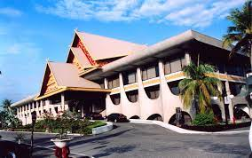
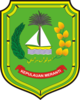

Sejarah

Secara etimologi, kata Riau berasal dari bahasa Portugis, "Rio", yang berarti sungai. Riau dirujuk hanya kepada wilayah yang dipertuan muda (Raja Bawahan Johor) di Pulau Penyengat. Wilayah tersebut kemudian menjadi wilayah Residentie Riouw pemerintahan Hindia-Belanda yang berkedudukan di Tanjung Pinang; dan Riouw oleh masyarakat setempat dieja menjadi Riau.
Riau merupakan penggabungan dari sejumlah kerajaan Melayu yang pernah berjaya di wilayah ini, yaitu Kerajaan Indragiri (1658-1838), Kerajaan Siak Sri Indrapura (1723-1858), Kerajaan Pelalawan (1530-1879), Kerajaan Riau-Lingga (1824-1913) dan beberapa kerajaan kecil lainnya , seperti Tambusai, Rantau Binuang Sakti, Rambah, Kampar dan Kandis.
Pembangunan Provinsi Riau telah disusun melalui Undang-undang darurat No. 19 tahun 1957 yang kemudian disahkan sebagai Undang-undang No.61 tahun 1958.Provinsi Riau dibangun cukup lama dengan usaha keras dalam kurun waktu hampir 6 tahun 17 November 1952 s/d 5 Maret 1958.
Melalui keputusan Presiden RI pada tanggal 27 Februari tahun 1958 No.258/M/1958, Mr.S.M. Amin ditugaskan sebagai Gubernur KDH Provinsi Riau pertama pada 5 Maret 1958 di Tanjung Pinang oleh Menteri Dalam Negeri yang diwakili oleh Sekjen Mr. Sumarman. Lalu berdasarkan keputusan Menteri Dalam Negeri No. Desember /I/44-25 pada tanggal 20 Januari 1959, Pekanbaru secara rsemi menjadi ibukota Provinsi Riau menggatikan Tanjung Pinang.
Kabupaten/Kota
Provinsi Riau memiliki 10 kabupaten dan 2 kota antara lain yaitu:
Kampar
Kabupaten kampar Kampar adalah salah satu Kabupaten di propinsi Riau lahir pada tanggal 06 februari 1950, hal ini tertuang dalam Perda Kabupaten Kampar Nomor 02 tahun 1999 dengan rujukan peraturan undang-undang ketetapan Gubernur Militer Sumatera Tengah, Nomor : 3 / DC / STG / 50 tanggal 06 Februari 1950. dan secara administratif pemerintahan Kabupaten Kampar dipimpin oleh Bupati pertama pada tahun 1958. Jauh sebelumnya Kampar telah memiliki sejarah panjang dengan Limo kotonya, dimana daerah ini, dulunya adalah bagian dari persukuan Minangkabau di Sumatera Barat, semasa pemerintahan system adat kenegerian yang dipimpin oleh datuk atau ninik mamak, pemerintahan Kampar dikenal dengan sebutan “Andiko 44” yang termasuk kedalam wilayah pemerintahan Andiko 44 adalah XIII Koto Kampar, VIII Koto Setingkai (Kampar Kiri), daerah Limo Koto (Kuok, Bangkinang, Salo, Airtiris dan Rumbio), X Koto di Tapung ( Tapung Kiri VII dan Tapung Kanan III), III Koto Sibalimbiong (Siabu), Rokan IV Koto dan Pintu Rayo.
Adat istiadat hingga bahasa sehari-hari (bahasa Ocu) hampir mirip dengan Minangkabau dan demikian pula semacam seni budaya, alat musik tradisional (calempong dan Oguong) dan beberapa kebiasaan lainnya.Kampar sebagai Kabupaten tertua di Propinsi Riau hingga hari ini (2008) memiliki luas 27.908.32 Km2, dengan beberapa kali pemekaran wilayah, seperti lahirnya Kabupaten Pelalawan dan Rokan Hulu, sementara jumlah penduduknya berkisar 750.000 jiwa / km2 dengan batasan-batasan wilayah, sebelah utara dengan Kabupaten Siak, sebelah Timur dengan Kota Pekanbaru dan Kabupaten Pelalawan, sebelah Selatan dengan Kabupaten Kuantan Singingi dan sebelah Barat berbatasan dengan Kabupaten Rokan Hulu dan Kabupaten Lima puluh Koto (Sumatera Barat).Baghandu Sudah menjadi pemandangan umum bagi masyarakat Limo Koto(Kampar) pada masa dahulu, bertani secara berpindah-pindah adalah rutinitas dalam menjalani kehidupan.
Indragiri Hulu
Suku-suku terasing yang ada di Kabupaten Indragiri Hulu awalnya tergabung dengan kerajaan Indragiri. Namun sekitar abad ke-13 di bawah pimpinan Datuk Perpatih Nan Sebatang—salah seorang pembesar Kerajaan Pagaruyung Minangkabau—mereka memisahkan diri dan membangun kampung Petalangan di Durian Cacar. Mengingat jasa-jasa Datuk Perpatih terhadap kerajaan Indragiri, Sultan Indragiri memberikan status daerah istimewa untuk wilayah Petalangan. Derah Petalangan tersebut diduga asal muasal kata Talang dan kata Mamak sendiri merupakan panggilan kehormatan Sultan Indragiri kepada Datuk Perpatih. Oleh karena itu,masyarakat keturunan yang dibawa oleh Datuk Perpatih ini disebut Talang Mamak.
Sekarang keturunannya tersebar di Kecamatan Siberida dan Pasir Penyu.Mereka umumnya bertani dan berkebun terutama menyadap karet hutan.Kegiatan ini dilakukan turun-temurun hingga sekarang.Tidak mengherankan bila pekerjaan ini menjadi cikal bakal bagi masyarakat Indragiri Hulu yang sebagian besar hidup dari pohon karet.
Indragiri Hilir
Indragiri hilir dengan ibukota Tembilahan termasuk dalam wilayah Propinsi Riau. Sejak dulu Indragiri telah menjalin hubungan baik dengan kerajaan Melayu Riau. Hubungan ini dimulai sejak penyerahan Indragiri kepada Malaka sebagai hadiah perkawinan Sultan Mansyur Syah dengan Raden Galuh Candra Kirana (putri Prabu Majapahit). Akan tetapi tidak cukup sebatas penyerahan daerah saja, ternyata rajanya juga ikut diserahkan.
Raja Merlang Indragiri dibawa ke Malaka sebagai bukti Indragiri telah menjadi daerah kekuasaan Malaka. Dengan demikian, diperkirakan tidak sedikit peninggalan-peninggalan sejarah yang ada di daerah ini. Oleh sebab itu, perlu diteliti tentang keberadaannya, sebab peninggalan tersebut tidaklah berdiri sendiri, tetapi mempunyai hubungan dengan peristiwa-peristiwa yang lain.
Pelalawan
Kabupaten Pelalawan dibentuk berdasarkan UU. No. 53 Tahun 1999, yang merupakan pemekaran dari Kabupaten Kampar, dan diresmikan oleh Menteri Dalam Negeri pada tanggal 12 Oktober 1999. Sementara peresmian operasionalnya dilakukan oleh Bapak Gubernur Riau pada tanggal 5 Desember 1999, dimana Pangkalan Kerinsi sebagai Ibu Kota Kabupaten Pelalawan.
Pembentukan Kabupaten Pelalawan atas dasar Kesepakatan dan Kebulatan Tekad bersama yang dilakukan melalui musyawarah besar masyarakat Kampar Hilir pada tanggal 11 s/d 13 April 1999 di Pangkalan Kerinci. Rapat tersebut menghadirkan seluruh komponen masyarakat yang terdiri dari Tokoh Masyarakat, Tokoh Pemuda, Lembaga-Lembaga Adat, Kaum Intelektual, Cerdik Pandai dan Alim Ulama. Dari musyawarah besar tersebut ditetapkan Pelalawan yang bermula dari Kerajaan Pekantua, yang melepaskan diri dari Kerajaan Johor tahun 1699 M, kemudian berkuasa penuh atas daerah ini.
Siak
Kerajaan Siak Sri Indrapura didirikan pada tahun 1723 M oleh Raja
Kecik yang bergelar Sultan Abdul Jalil Rahmat Syah putera Raja Johor
(Sultan Mahmud Syah) dengan istrinya Encik Pong, dengan pusat
kerajaan berada di Buantan. Konon nama Siak berasal dari nama
sejenis tumbuh-tumbuhan yaitu siak-siak yang banyak terdapat di situ.
Sebelum kerajaan Siak berdiri, daerah Siak berada dibawah
kekuasaan Johor. Yang memerintah dan mengawasi daerah ini adalah
raja yang ditunjuk dan diangkat oleh Sultan Johor. Namun hampir 100
tahun daerah ini tidak ada yang memerintah. Daerah ini diawasi oleh
Syahbandar yang ditunjuk untuk memungut cukai hasil hutan dan hasil
laut.
Diawal Pemerintahan Republik Indonesia, Kabupaten Siak ini
merupakan Wilayah Kewedanan Siak di bawah Kabupaten Bengkalis
yang kemudian berubah status menjadi Kecamatan Siak. Barulah pada
tahun 1999 berubah menjadi Kabupaten Siak dengan ibukotanya Siak
Sri Indrapura berdasarkan UU No. 53 Tahun 1999.
Rokan Hulu

Rokan Hulu (Rohul) merupakan wilayah yang terletak di bagian hulu nya Rokan, menurut riwayat, kata Rokan berasal dari bahasa Arab “rokana” artinya damai atau rukun. Rokan juga di sebut dengan "Rantau Rokan" atau tempat orang merantau dari Sumatera Barat. Kata Rokan ini juga di pakai sebagai nama sungai yang membelah Pulau Sumatera di bagian tengah, menuju utara sumatera (Selat Malaka), sungai ini merupakan sarana transportasi utama untuk menjangkau pusat-pusat perdagangan sampai ke negeri tetangga.
Kabupaten yang mempunyai bukti sejarah perjuangan berupa Benteng Tujuh Lapis yang melahirkan seorang Pahlawan Nasional Tuanku Tambusai ini, telah dipimpin oleh 3 orang putra terbaik daerah ini, yaitu : H. Nurhasyim, SH (Plt tahun 1999), Drs.H.Achmad (Plt tahun 2000), H.Ramlan Zas, SH.MH dan Drs.H.Auni M Noor tahun 2001 – 2006 dan Drs. H. Achmad, M.Si. (Bupati Devenitif) dan H. Sukiman (Wakil Bupati Devenitif) tahun 2006 - 2011 yang merupakan pilihan rakyat dan Drs. H. Achmad, M.Si. dan Ir. H. Hafizh Syukri, MM tahun 2011-2016 yang merupakan Bupati Pilihan Rakyat untuk periode ke-2.
Bengkalis
Kabupaten Bengkalis adalah salah satu kabupaten di Provinsi Riau, Indonesia. Ibukota kabupaten ini terletak di Pulau Bengkalis. Kota terbesar di kabupaten ini adalah Duri sebagai pusat penghasil petroleum dan Selat Panjang sebagai kota perdagangan penghasil sagu.
Kabupaten Bengkalis terletak di sebelah timur Pulau Sumatera yang mencakup kawasan seluas 11,481.77 km² bersempadan dengan Melaka, Malaysia di sebelah utara, Kabupaten Siak di sebelah selatan, Kabupaten Karimun, dan Kabupaten Pelalawan di sebelah timur, Kota Dumai, dan Kabupaten Rokan Hilir di sebelah barat
Penghasilan terbesar Kabupaten Bengkalis adalah petroleum, yang menjadi sumber pendapatan terbesar daerah tersebut bersama dengan gas.
Kabupaten Bengkalis mempunyai letak yang sangat strategik kerana adanya perhubungan perkapalan langsung ke Melaka. Ramai penduduk kabupaten Bengkalis memilih Melaka untuk rawatan kesihatan di tiga buah hospital swasta. Feri berulang-alik ke Melaka 3 kali seminggu hanya menempuh masa selama 2.5 jam.
Rokan Hilir
Rokan Hilir dibentuk dari tiga kenegerian, yaitu negeri Kubu, Bangko dan Tanah Putih. Negeri-negeri tersebut dipimpin oleh seorang Kepala Negeri yang bertanggung jawab kepada Sultan Siak.
Distrik pertama didirikan Hindia Belanda di Tanah Putih pada saat menduduki daerah ini pada tahun 1890. Setelah Bagansiapiapi yang dibuka oleh pemukim-pemukim Tionghoa berkembang pesat, Belanda memindahkan pemerintahan kontrolir-nya ke kota ini pada tahun 1901. Bagansiapiapi semakin berkembang setelah Belanda membangun pelabuhan modern dan terlengkap untuk mengimbangi pelabuhan lainnya di Selat Malaka hingga Perang Dunia I usai. Setelah kemerdekaan Indonesia, Rokan Hilir digabungkan ke dalam Kabupaten Bengkalis, Provinsi Riau.
Bekas wilayah Kewedanaan Bagansiapiapi yang terdiri dari Kecamatan Tanah Putih, Kubu, dan Bangko serta Kecamatan Rimba Melintang dan Bagan Sinembah kemudian pada tanggal 4 Oktober 1999 ditetapkan oleh Pemerintah Republik Indonesia sebagai kabupaten baru di Provinsi Riau yang diberi nama Kabupaten Rokan Hilir sesuai dengan Undang-Undang Nomor 53 tahun 1999 dengan ibu kota Ujung Tanjung dan ibu kota sementara di Bagansiapiapi.
Bagansiapiapi, dengan infrastruktur kota yang jauh lebih baik, pada tanggal 24 Juni 2008 resmi ditetapkan sebagai ibu kota Kabupaten Rokan Hilir yang sah setelah Dewan Perwakilan Rakyat (DPR) menyetujui 12 Rancangan Undang-Undang (RUU) Pembentukan Kabupaten/Kota dan RUU atas perubahan ketiga atas UU Nomor 53 Tahun 1999 disahkan sebagai Undang-Undang dalam Rapat Paripurna.
Kepulauan Meranti

Kepulauan Meranti adalah sebuah kabupaten di Provinsi Riau, Indonesia. Ibukotanya adalah Selatpanjang. Jumlah penduduk kabupaten ini berjumlah 206.116 jiwa (2020), dengan luas wilayah 3.707,84 km².
Kabupaten Kepulauan Meranti terdiri dari Pulau Tebing Tinggi, Pulau Padang, Pulau Merbau, Pulau Ransang, Pulau Topang, Pulau Manggung, Pulau Panjang, Pulau Jadi, Pulau Setahun, Pulau Tiga, Pulau Baru, Pulau Paning, Pulau Dedap, Pulau Berembang, Pulau Burung. Adapun nama Meranti diambil dari nama gabungan "Pulau Merbau, Pulau Ransang, dan Pulau Tebing Tinggi".
Kuantan Singigi
Kuantan Singingi (disingkat Kuansing) adalah sebuah kabupaten di provinsi Riau, Indonesia. Ibu kotanya adalah Teluk Kuantan. Kabupaten ini berada di bagian barat daya Provinsi Riau dan merupakan pemekaran dari Kabupaten Indragiri Hulu. Jumlah penduduk Kuantan Singigi pertengahan tahun 2023 sebanyak 350.975 jiwa.
Kabupaten Kuantan Singingi merupakan sebuah Kabupaten Pemekaran dari Kabupaten Indragiri Hulu yang dibentuk berdasarkan Undang-undang Nomor 53 Tahun 1999 tentang Pembentukan Kabupaten Pelalawan, Kabupaten Siak, Kabupaten Rokan Hulu, Kabupaten Rokan Hilir, Kabupaten Karimun, Kabupaten Natuna, Kabupaten Kuantan Singingi dan Kota Batam, dengan Ibu Kota Teluk Kuantan. Jarak antara Teluk Kuantan dengan Pekanbaru sebagai Ibu kota Provinsi Riau Pekanbaru adalah 160 km
Kota Dumai
Kota Dumai merupakan sebuah kota yang terletak di Provinsi Riau, Indonesia, sekitar 188 km dari Kota Pekanbaru. Sebelumnya, kota Dumai merupakan kota terluas nomor dua Di Indonesia setelah Manokwari. Tapi semenjak Manokwari pecah dan terbentuk kabupaten Wasior, maka Dumai pun menjadi yang terluas. Tercatat dalam sejarah, Dumai merupakan sebuah dusun kecil di pesisir timur Provinsi Riau yang kini mulai menggeliat menjadi mutiara di pantai timur Sumatera
Nama Dumai menurut cerita rakyat tentang Puteri Tujuh, berasal dari kata di lubuk dan umai (sejenis binatang landak) yang mendiami lubuk tersebut. Karena sering diucapkan cepat, lama kelamaan kata-kata tersebut bertaut menjadi d'umai dan selanjutnya menjadi dumai.
Kota Pekanbaru

Pekanbaru (Jawi: ڤكنبارو) adalah ibu kota dan kota terbesar di provinsi Riau, Indonesia. Kota ini merupakan salah satu sentra ekonomi terbesar di pulau Sumatra dan termasuk kota dengan tingkat pertumbuhan, migrasi, dan urbanisasi yang tinggi.
Pekanbaru terletak di tepian Sungai Siak dan pada awalnya merupakan sebuah kota kecil yang memiliki pakan (pasar) yang bernama Payung Sekaki atau Senapelan. Pada abad ke-18, wilayah yang kini menjadi Pekanbaru berada pada lingkar pengaruh Kesultanan Siak, dan Sultan Abdul Jalil Alamuddin Syah (Marhum Pekan) secara luas dianggap sebagai pendiri kota Pekanbaru modern; hari jadi kota ini ditetapkan pada tanggal 23 Juni 1784. Pekanbaru menjadi sebuah "kota kecil" pada tahun 1948 dan kotapraja pada tahun 1956, sebelum ditetapkan menjadi ibu kota provinsi Riau sebagai pengganti dari Tanjung Pinang pada tahun 1959.
Perekonomian Pekanbaru didukung oleh perdagangan dan pertambangan minyak bumi. Kota ini memiliki sebuah bandar udara internasional, terminal bus antar kota dan antar provinsi, serta dua pelabuhan. Populasi Pekanbaru bersifat kosmopolitan, dipengaruhi oleh letak strategisnya di tengah-tengah Lintas Timur Jalan Raya Lintas Sumatra. Beberapa etnis yang memiliki populasi signifikan di kota ini antara lain adalah suku Minangkabau, Orang Ocu, Melayu, Jawa, Batak, dan Tionghoa.